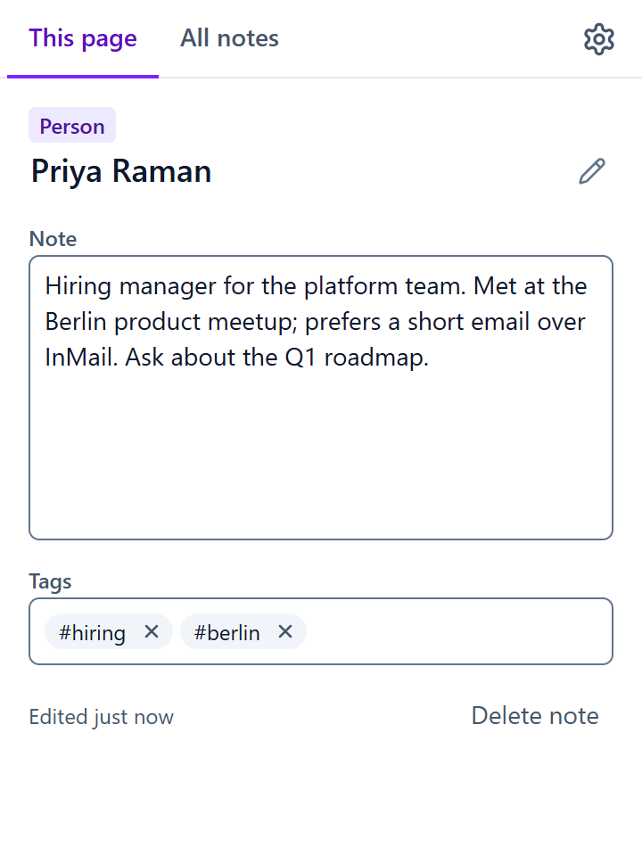

Penflag
Remember why you saved them.
Private notes and tags for the LinkedIn people, companies, jobs and posts you care about, in your browser's side panel. Everything stays on your device.

What it does
- Open any LinkedIn profile, company, job or post, and write a note about it in the side panel. It saves as you type.
- Add tags like #recruiter or #follow-up, then search and filter all your notes in one place.
- The toolbar icon shows a dot on pages you have a note on.
- Export your notes to a file, import them on another computer, or delete them all.
Private by design
No account, no servers, no analytics. Penflag reads only the LinkedIn page's address and title, never page content, and it never clicks, posts or scrapes. Read the privacy policy.
Get it
Penflag is in early testing for Chrome. A public Chrome Web Store link will appear here.
Support
Questions, bugs or ideas: shan54345@proton.me, or open an issue.